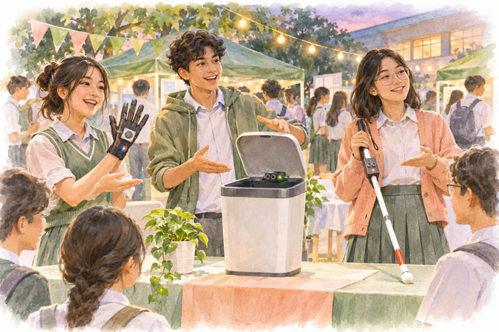

Listen to the text
Speed:

Every April our region holds a fair of young inventors. You will not find flying cars there. The rule of the fair is simple: "Find a real problem near you and solve it." This year our reporter talked to three participants. The glove that speaks. Fourteen-year-old Daryna has a deaf cousin, Ivanko. He speaks sign language, but most people around him don't understand it. Daryna sewed small sensors into an ordinary glove and connected them by thin wires to a tiny computer. When Ivanko shows a sign, the device recognises the position of his fingers and says the word aloud. "It knows only forty words so far," says Daryna. "But one of them is 'ice cream', so he can already order it himself." The bin that says thank you. Marko, 15, was tired of rubbish around the school stadium. He noticed that small children love buttons and sounds. So he built a bin with a sensor in the lid. Every time somebody throws something in, the bin plays a short melody and says "Thank you!" in a funny voice. It works on a small solar battery. In the first week pupils collected all the rubbish in the yard and started bringing papers from home. "I didn't invent a bin," Marko laughs. "I invented a reason to use it." The stick that sees. Yaryna's grandmother is losing her sight. She uses a white stick, but it can't warn her about things at the level of her head, such as branches or open windows. Yaryna, who is sixteen, attached a sensor that measures distance with the help of sound waves. When an object is closer than a metre, the handle of the stick begins to shake gently. The first prototype was heavy and ugly. The fourth one weighs less than a phone. None of these inventions is completely new. Similar devices exist in the world, and they are much more expensive. But each of the three teenagers started with a person, not with a gadget. "Technology is not about electricity," says the head of the jury. "It is about noticing that somebody near you has a problem." Daryna has already received her first order. It came from Ivanko: he wants the glove to learn the word "pizza".
Tap any sentence to hear it again.
Сподобалось? На сайті ще більше матеріалів для вчителів!
Reader, презентації, ігри, діагностичні та контрольні роботи до підручників 1-11 класів.
Перейти на сайт materials.allaenglish.com